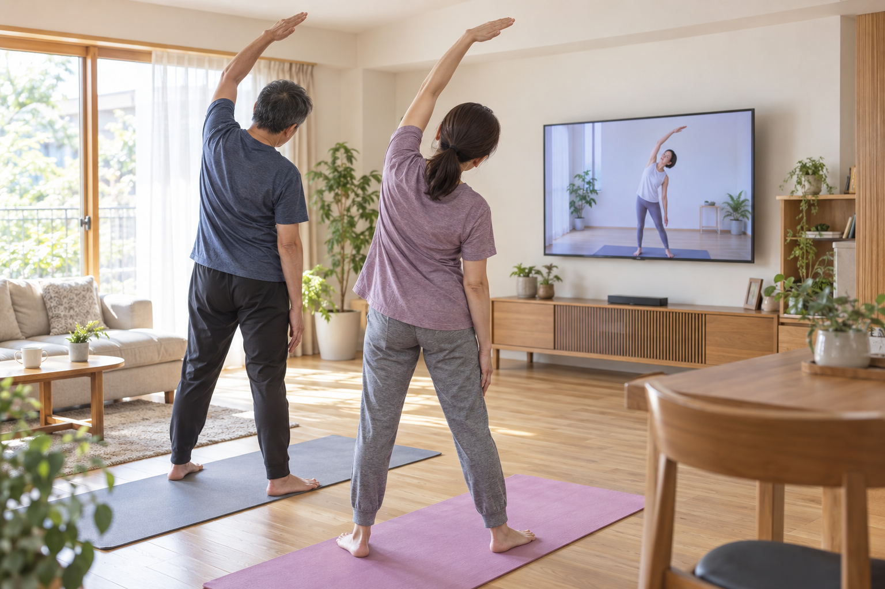
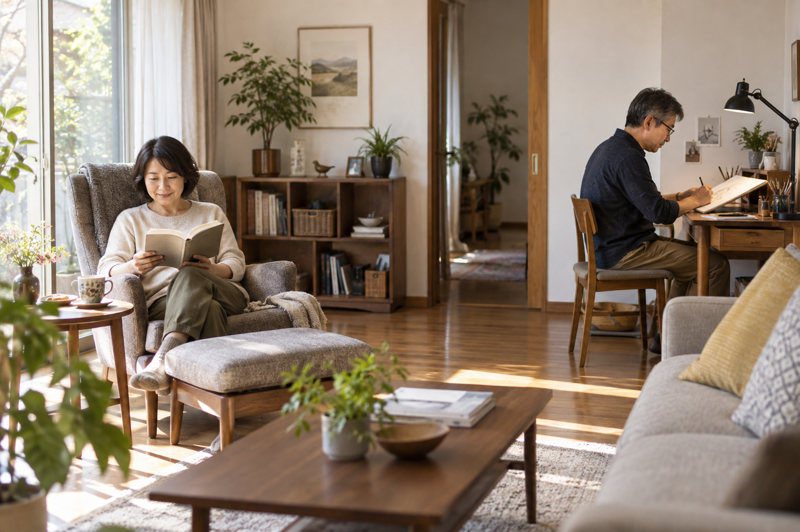

ミシンを使うたびに箱から出し、食事の前には片づける。趣味そのものより、準備や片付けが面倒になってしまうことがあります。使わなくなった子ども部屋やリビングの一角を、道具を置いておける場所に変えられたらどうでしょう。
夫婦それぞれの居場所については第10回で考えました。ここでは一歩進めて、趣味を続けるための机や収納、音への配慮を具体的に見ていきます。
趣味の準備や片づけを楽にする机と収納、音への配慮を具体化。家具で試す工夫から住宅部品の改修まで、夫婦それぞれの楽しみを支える住まいを考えます。
公開予定日：2026年11月12日
夫婦・趣味・自分時間 文｜エイスケ（住宅と教育の専門家）
文｜エイスケ（住宅と教育の専門家）
ミシンを使うたびに箱から出し、食事の前には片づける。趣味そのものより、準備や片付けが面倒になってしまうことがあります。使わなくなった子ども部屋やリビングの一角を、道具を置いておける場所に変えられたらどうでしょう。
夫婦それぞれの居場所については第10回で考えました。ここでは一歩進めて、趣味を続けるための机や収納、音への配慮を具体的に見ていきます。
まずは、やってみたいことを別々に一つずつ、紙に書き出してみましょう。読書や裁縫、キャンプ道具の手入れ、映画、筋トレなど。心から楽しいと思うものを、思いつくまま並べてみてください。
そのうえで、音が出るか、道具を広げる必要があるか、片づけに時間がかかるかを確認します。すると「趣味部屋が欲しい」という漠然とした希望が、「ミシンを毎回しまわなくてよい机が欲しい」という、ずっと具体的な相談に変わっていきます。
視線が気になる場合は、席の向きを変えるのも一つの方法です。机や椅子、棚などを動かし、お互いが落ち着ける配置を試してみましょう。
棚で仕切るなら、転倒対策と通路を確保し、光や風も通るようにします。視線を遮っても音は届くので、使用時間の調整や部屋の使い分け、ヘッドホンの使用も有効です。
一週間ほど使って「ここなら落ち着く」「ここは使いづらい」と分かってから相談すると、必要な改修を絞り込めます。

キッチンの近くに、パソコンや手帳を置けるカウンターをつくると、作業のたびにダイニングテーブルを片づけずに済む、自分の席になります。水や油がかからず、椅子を引いても通れる位置を選びましょう。
一人は読書の席、もう一人は手仕事を広げられる机。広さを均等にするより、それぞれが使いやすい場所を話し合ってみてください。食事のテーブルは二人で使えるように残しておくと、顔を合わせるきっかけの一つになります。
収納は、道具の大きさを測ってから計画します。ミシンを載せた机の奥行き、布を広げる面積、キャンプ道具を乾かす場所まで考えると、棚の寸法や出し入れする方向を決められます。
ギターなどの楽器を練習するなら、使う時間と部屋を家族で決めたうえで、隣室や屋外へ音がどう伝わるかを確かめます。内窓や扉の見直しは候補ですが、壁や床などからも音は伝わるため、部屋全体で必要な対策を検討します。
裁縫なら手元の明かり、キャンプ道具なら濡れた物を乾かす場所も必要です。小屋やガレージまで広げる場合は、敷地の条件や必要な手続きを含め、音の対策とともに施工店へ相談してください。
好きな音楽を聴く。プロジェクターで二人で映画を見る。そんな楽しみなら、映す壁と座る位置を先に決めてみます。電源ケーブルが通路を横切らないか、昼に見るなら窓を遮光できるか。家具や家電を選ぶ時から住まい側も見ておくと、毎回の準備や片付けが楽になります。
筋トレ、ピラティス、ヨガなら、二人分のマットを広げ、手足を伸ばして家具に当たらない場所を探します。近くにマットをしまう場所も決めれば、始めるたびに大きく片づけずに済みます。マンションでは階下への音にも配慮しましょう。体調に合う運動を楽しんでください。
同じ部屋で、一人は読書、一人はヘッドホンで音楽を聴く。そんな時間もよいものです。趣味をそろえることにこだわらず、それぞれが落ち着ける向きに椅子を置くだけでも、同じ部屋で過ごしやすくなります。
好きなことにすぐ取りかかれる場所があると、毎日を楽しむ助けになります。私は、そんな場所をつくるために住まいを直すのもよいと思っています。
大きな部屋をつくらなくても、道具を置ける机や、出し入れしやすい棚の設置から始められます。お互いの楽しみを聞きながら、まずは今週、一つだけ、道具を出しやすい場所をつくってみてください。
関連する住まいの機能・設備を探す
居室を便利に使いやすく ↗仕事や趣味を楽しむ ↗関連記事
【第22回】家の点検は1年目から｜築年数ごとの確認ポイントと保証の見直し【第19回】家族が集まる場所は、リビングだけじゃない。成長に合わせて「つながり方」を変えられる家へ【第10回】子どもが巣立ったあと、家はどう変える？──50代から考える夫婦の居場所
この記事を書いた人｜エイスケ
1986年生まれ。実家の工務店・不動産に10年間従事したのち、教育の世界へ。住宅と教育、両方の視点から「豊かな暮らし」をテーマに執筆します。